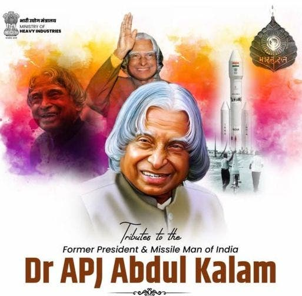

A Life of Service
Widely referred to as the "People's President," Dr. Kalam was a symbol of humility and hard work. His journey from a small town in Rameswaram to the highest office in the nation remains India’s most inspiring story.
15 OCT 1931 — 27 JUL 2015

"If you want to shine like a sun, first burn like a sun."
Widely referred to as the "People's President," Dr. Kalam was a symbol of humility and hard work. His journey from a small town in Rameswaram to the highest office in the nation remains India’s most inspiring story.
As the chief architect of India's indigenous missile systems, he transformed the nation’s defense landscape. Yet, he preferred to be remembered as a teacher who ignited the minds of the youth.